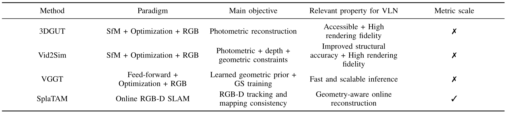
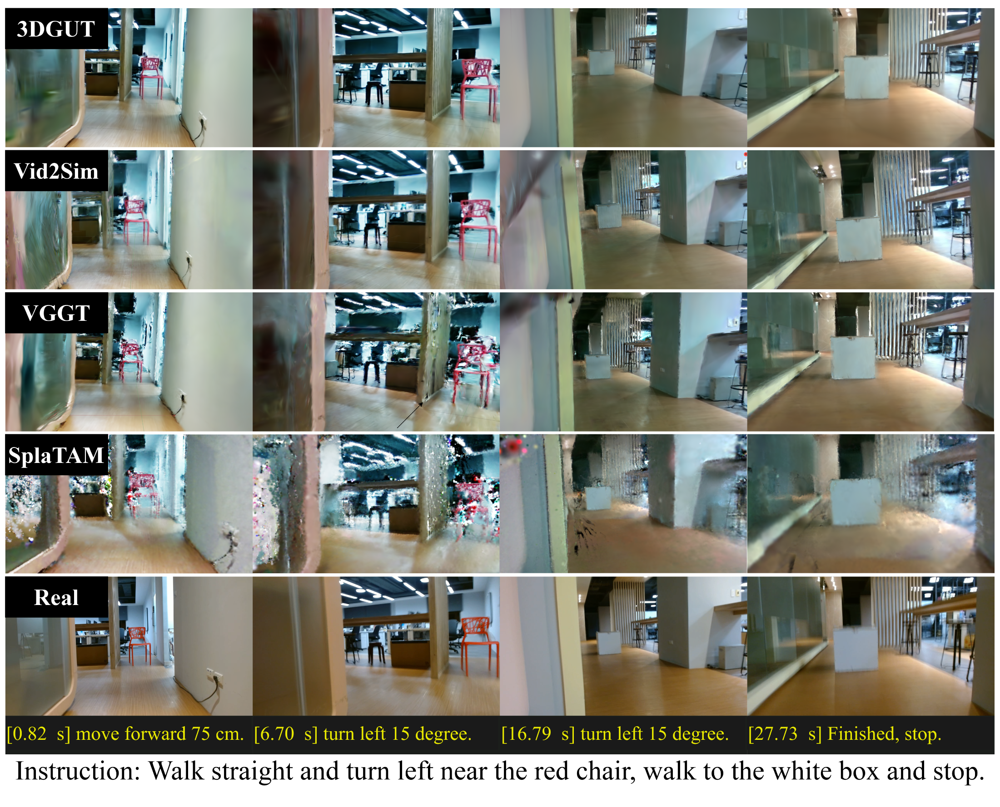
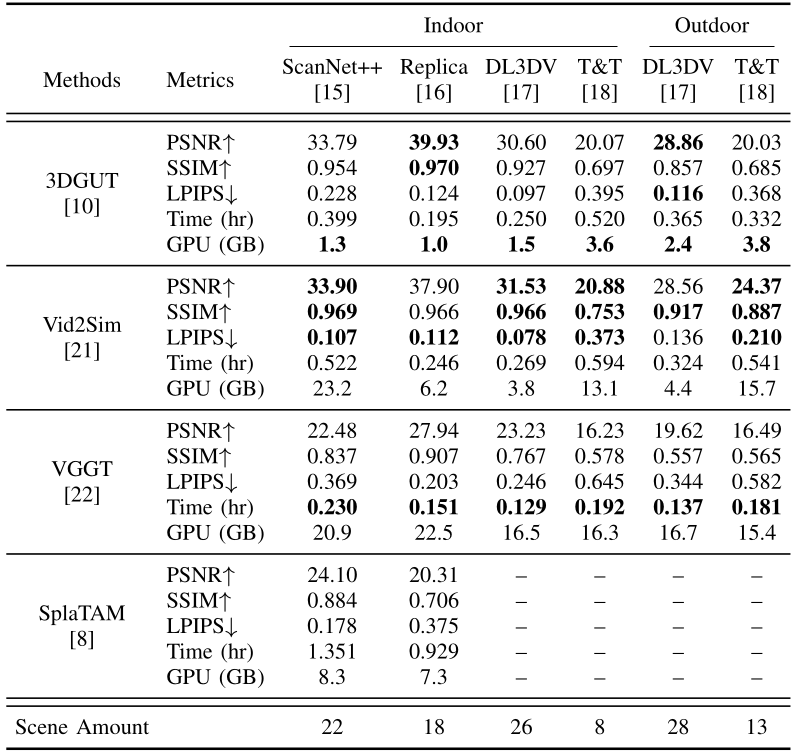
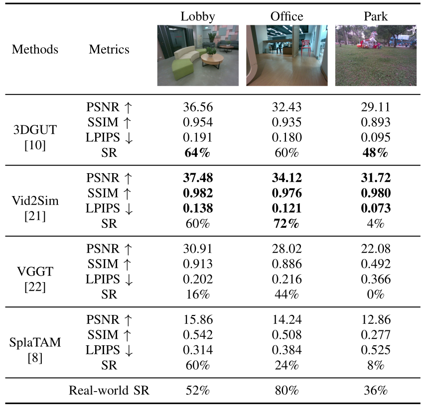

VL-N3RD-Bench
Benchmarking Vision-Language Navigation with 3D Gaussian Reconstruction for Deployment
*Indicates Equal Contribution
Abstract
Recent advances in large language models (LLMs) have expanded robotic capabilities by bridging perception and action. Vision-language navigation (VLN) enables embodied agents to follow high-level semantic instructions in complex and unseen environments. Fine-tuning VLA models requires photorealistic training data, as insufficient visual fidelity may exacerbate sim-to-real gaps and degrade action execution. However, achieving such realism in simulation is challenging, and training is often conducted using synthetic views or egocentric video datasets. Gaussian Splatting (GS) has recently emerged as a promising solution for high-fidelity 3D scene reconstruction, offering a scalable alternative for generating training environments. Nevertheless, the impact of GS reconstruction quality on downstream VLN performance has not been systematically investigated. In this work, we benchmark state-of-the-art GS pipelines using public and customized datasets. We evaluate reconstruction quality via standard image-based metrics and computational efficiency. Finally, we use VL-N3RD-Bench to evaluate a pretrained VLA model on a Unitree A1 robot across simulated and physical environments. Our results demonstrate that overall reconstruction quality can align with stronger indoor VLN performance, but this relationship is inconsistent, and strong image-based metrics alone do not guarantee better outdoor navigation when geometry and traversability become more important.
VL-N3RD-Bench reconstructs scenes from multi-view images using multiple 3D Gaussian Splatting pipelines, manually aligns them with collision geometry generated from SplaTAM, and evaluates downstream navigation in simulation and the real world.
VLN Performance
Here we present successful and failed cases of the evaluated VLN pipelines across simulated environments reconstructed by 3DGUT and their real-world counterparts. For simulation results from other pipelines, see here.
Successful Cases
Failure Cases
Pipeline Comparison

Overview of evaluated 3DGS pipelines. 3DGUT, Vid2Sim, VGGT, and SplaTAM cover SfM-based optimization, feed-forward reconstruction, and online RGB-D SLAM settings.

Representative real-world VLN experiments in the Office scene, including trajectory frames, language instructions, command outputs, and render comparisons across reconstruction pipelines.
Results

Reconstruction Quality
The benchmark compares visual fidelity through standard reconstruction metrics, runtime, and GPU memory trade-offs, highlighting Vid2Sim’s strongest overall fidelity, 3DGUT’s favorable quality-efficiency trade-off, and VGGT’s fast inference speed.

Navigation Performance
VLN success rates on Lobby, Office, and Park show that better reconstruction metrics can align with stronger indoor navigation, but do not consistently predict performance in more challenging outdoor scenes.